Over the last weeks, we learned about the different modelling steps for species distribution modelling (SDMs) and different SDM algorithms. This was all very technical and kind of carried us a little away from the biodiversity data analyses of prac 2. Thus, the goal of today is to combine all the things we learned so far and actually tackle some questions in global change ecology.
We will again work with the UK breeding bird data of the last weeks, fit SDMs for different species, analyse their species-environment relationships and the relative importance of climate vs. land cover variables, predict range shifts and shifts in species richness patterns under scenarios of global change, and assess high priority areas for conservation.
In this prac, I will only provide the very essentials like some initial data wrangling while you will have to find your own solutions for the different research questions.
As in the previous prac, we will work with dataset of British breeding and wintering birds (Gillings et al. 2019). The data contain breeding bird records in 20-year cycles (1968-1972, 1988-1991, 2008-2011 and) wintering bird records in 30-year cycles (1981/1982-1983-1984, 2007/2008-2010/2011) at a 10 km spatial resolution throughout Britain, Ireland, the Isle of Man and the Channel Islands. The data are available through the British Trust of Ornithology (www.bto.org) and can be downloaded here. If you were following the previous practicals, you should have the data on your local machine (e.g. in data folder).
Here, I show you an example how we can quickly make a data frame of all breeding occurrences of the different species, concentrating on the breeding period 2008-2011. In the example, I only consider breeding occurrences that were tagged as “Confirmed” treating all cells outside the confirmed breeding sites as absences. Then, I spatially thin the data to reduce problems with spatial autocorrelation. Of course, you can play around with the definition of presence vs. absence, and with the thinning procedure.
We first read in the data.
# We read in UK bird data (you may have to adapt the filepath)
bird_dist <- read.table('data/distributions.csv',header=T, sep=',', stringsAsFactors = F)
bird_spp <- read.table('data/species_lookup.csv',header=T, sep=',', stringsAsFactors = F)
bird_coords <- read.table('data/grid_square_coordinates_lookup.csv',header=T, sep=',', stringsAsFactors = F)
grid_ref <- read.table('data/UK_10km_gridref.csv',header=T,sep=',', stringsAsFactors = F)Next, we reshape the data to a data frame with a row for each site and a columns for each species.
# Prepare species data: we only consider records at the species level
speccodes <- subset(bird_spp, taxonomic_rank=='Species')$speccode
spp <- subset(bird_spp, taxonomic_rank=='Species')$scientific_name
# Bird distribution records, considering only confirmed breeding occurrences for 2008-2011
bird_dist <- subset(bird_dist, period=="2008-11" & resolution==10 & season=='B' & island=='B' & status == 'Confirmed' & speccode %in% speccodes)
# We make a data frame with sites in rows and species in columns
spp_dat <- reshape(data.frame(bird_dist[,3:4],sp=1),direction='wide',timevar = 'speccode',v.names='sp',idvar='grid',sep='_')
spp_dat[is.na(spp_dat)] <- 0
spp_dat <- merge(spp_dat,grid_ref)Last, we thin the data to avoid problems with spatial autocorrelation in adjacent cells.
library(raster)
library(dismo)
# Coordinate reference for British national grid
proj_UK <- '+proj=tmerc +lat_0=49 +lon_0=-2 +k=0.9996012717 +x_0=400000 +y_0=-100000 +ellps=airy +datum=OSGB36 +units=m +no_defs'
# Make raster with spatial background of UK
bg <- rasterFromXYZ(data.frame(spp_dat[,c("EASTING",'NORTHING')],bg=1),crs=proj_UK)
# Thin coordinates for species data set and only keep species with at least 40 thinned presences:
xy <- gridSample(spp_dat[,c("EASTING",'NORTHING')],aggregate(bg,2),chess='white')
spp_thinned <- merge(xy,spp_dat,by=c("EASTING",'NORTHING'))
spp_min40 <- names(which(colSums(spp_thinned[,-c(1:3)])>40))
spp_thinned <- spp_thinned[c('grid','EASTING','NORTHING',spp_min40)]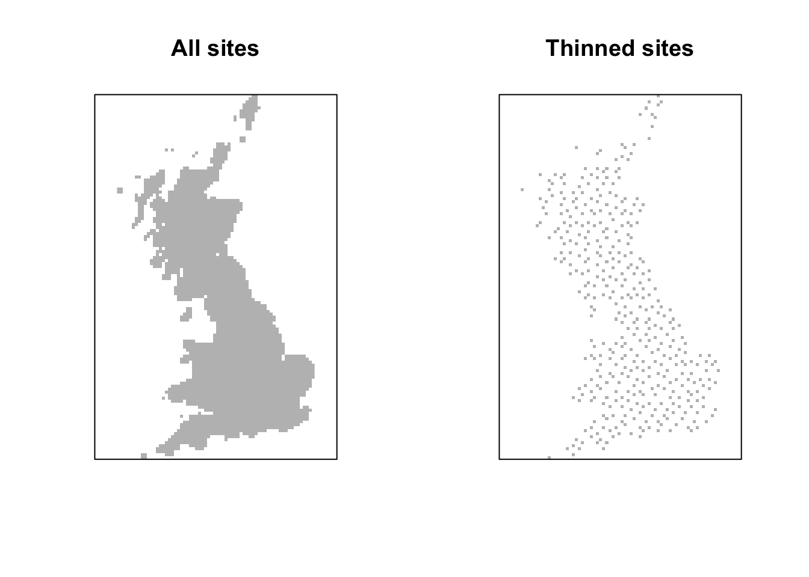
In the last practical, you also downloaded the climate data and we can now simply load it using the raster package. We take the background from the distribution data. Additionally, we can load future and past climate scenarios.
# GET CURRENT CLIMATE DATA
# Please note that you have to set download=T if you haven't downloaded the data before:
bio_curr <- getData('worldclim', var='bio', download=F, lon=-5, lat=55, res=5, path=my_filepath)
# UK extent in lon/lat coordinates
ext_uk <- c(-12, 3, 48, 62)
# Crop and reproject current climate
bio_curr <- crop(bio_curr, ext_uk)
bio_curr <- projectRaster(bio_curr, bg)
bio_curr <- resample(bio_curr, bg)
bio_curr <- mask(bio_curr, bg)
#-------
# GET FUTURE CLIMATE DATA
# Please note that you have to set download=T if you haven't downloaded the data before:
bio_fut <- getData('CMIP5', var='bio', download=F, res=5, rcp=45, model='MC', year=50, path=my_filepath)
# Crop and reproject future climate
bio_fut <- crop(bio_fut, ext_uk)
bio_fut <- projectRaster(bio_fut, bg)
bio_fut <- resample(bio_fut, bg)
bio_fut <- mask(bio_fut, bg)Automatic raster download of past climate scenarios is not yet implemented in the raster package although available from the worlclim data base. We thus need to download the data ourselves.
# GET PAST CLIMATE DATA OF THE LAST GLACIAL MAXIMUM
download.file(url='http://biogeo.ucdavis.edu/data/climate/cmip5/lgm/mrlgmbi_5m.zip',destfile=paste0(my_filepath,'/mrlgmbi_5m.zip'), method='auto')
unzip(zipfile=paste0(my_filepath,'/mrlgmbi_5m.zip'),exdir=paste0(my_filepath,'/past'))
file_order <- order(as.numeric(sub('.tif','',sub('mrlgmbi','',list.files(paste0(my_filepath,'/past'))))))## [1] "mrlgmbi1.tif" "mrlgmbi2.tif" "mrlgmbi3.tif" "mrlgmbi4.tif"
## [5] "mrlgmbi5.tif" "mrlgmbi6.tif" "mrlgmbi7.tif" "mrlgmbi8.tif"
## [9] "mrlgmbi9.tif" "mrlgmbi10.tif" "mrlgmbi11.tif" "mrlgmbi12.tif"
## [13] "mrlgmbi13.tif" "mrlgmbi14.tif" "mrlgmbi15.tif" "mrlgmbi16.tif"
## [17] "mrlgmbi17.tif" "mrlgmbi18.tif" "mrlgmbi19.tif"bio_past <- stack(paste0(my_filepath,'/past/',list.files(paste0(my_filepath,'/past'))[file_order]))
# Crop and reproject past climate
bio_past <- crop(bio_past, ext_uk)
bio_past <- projectRaster(bio_past, bg)
bio_past <- resample(bio_past, bg)
bio_past <- mask(bio_past, bg)
spplot(stack(bio_past[[1]],bio_curr[[1]],bio_fut[[1]])/10,names.attr=c('Bio1 - LGM','Bio1 - Current','Bio1 - 2050'))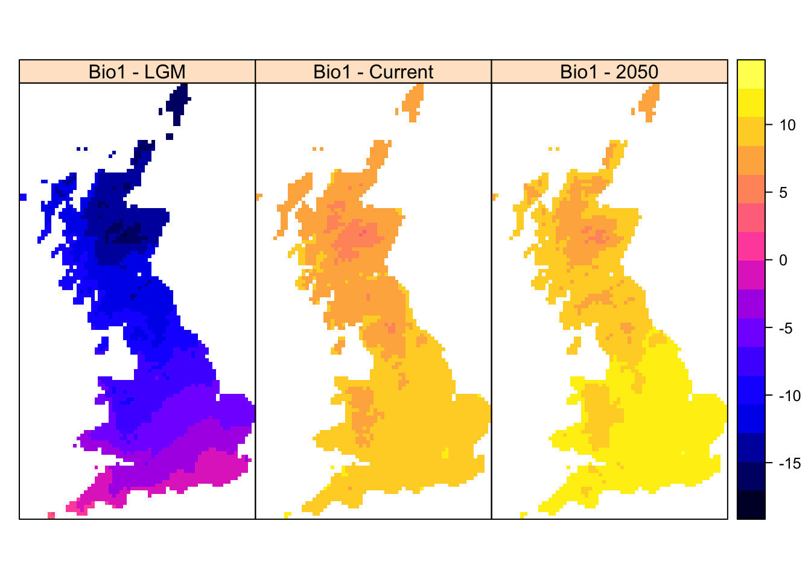
Additionally, we will consider land cover data today. Such data are available at 100 m resolution from the CORINE data set. Here, we will use the land cover maps from 2012, the CLC2012. The data are freely available but you have to register. (Humboldt participants can also download it from moodle.)
# Get land cover key
lc_key <- read.table('data/clc2012_clc2006_v2018_20_raster100m/CLC2012_CLC2006_V2018_20.txt',sep=',')
# Get land cover data
lc100 <- raster('data/clc2012_clc2006_v2018_20_raster100m/CLC2012_CLC2006_V2018_20.tif')
# Crop to UK
lc100 <- crop(lc100, c(3e6,4e6,3e6,4.5e6))
# Look at different land cover categories
levels(lc100)The raster contains the main land cover in 100 m cells. As the bird data are at 10 km resolution, we will aggregate the land cover data, calculating the proportional cover at 10 km. This could take some time. (Humboldt participants can also download it from moodle.)
# Calculate the proportional cover for each land cover class and stack:
for (i in seq_len(nrow(lc_key)-1)){
print(i)
temp_r <- aggregate(lc100,100, fun=function(x,...){sum(x==lc_key[i,1])/100})
if (i==1) {
lc <- temp_r
} else {
lc <- addLayer(lc, temp_r)
}
}
# Assign names of land cover classes:
names(lc) <- as.character(lc_key[1:44,6])
# Reproject to UK national grid to be consistent with bird data:
lc <- projectRaster(lc, bg)
lc <- resample(lc, bg)
lc <- mask(lc,bg)
# Save the raster:
writeRaster(lc,file='data/lc_prop_10km.grd')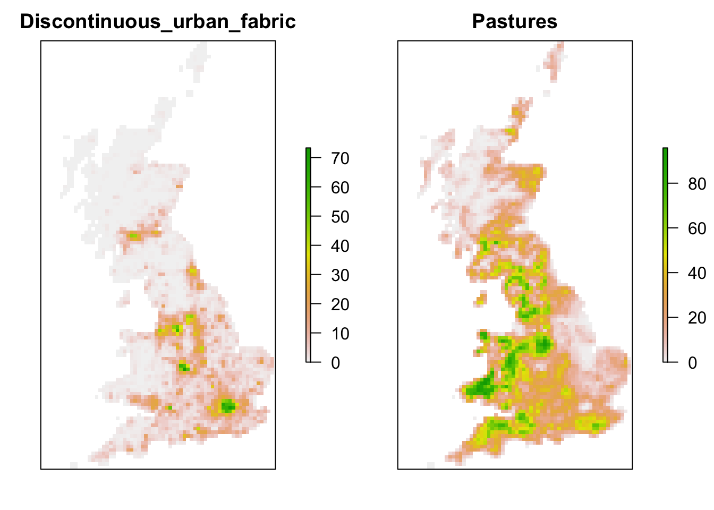
As these land cover classes are quite detailed, we could also further aggregate them to broader classes.
# Aggregate classes
lc_agg <- lc[[1]]+lc[[2]] # Urban
lc_agg <- addLayer(lc_agg, lc[[3]]) # Industrial
lc_agg <- addLayer(lc_agg, lc[[4]]+lc[[5]]+lc[[6]]) # Transport
lc_agg <- addLayer(lc_agg, lc[[7]]+lc[[8]]+lc[[9]]) # Special urban
lc_agg <- addLayer(lc_agg, lc[[10]]+lc[[11]]) # Recreational
lc_agg <- addLayer(lc_agg, lc[[12]]+lc[[13]]+lc[[14]]) # Arable
lc_agg <- addLayer(lc_agg, lc[[15]]+lc[[16]]+lc[[17]]) # Orchards
lc_agg <- addLayer(lc_agg, lc[[18]]+lc[[21]]+lc[[22]]) # Pastures meadows
lc_agg <- addLayer(lc_agg, lc[[19]]+lc[[20]]) # Permanent crops
lc_agg <- addLayer(lc_agg, lc[[23]]+lc[[24]]+lc[[25]]) # Forests
lc_agg <- addLayer(lc_agg, lc[[26]]+lc[[27]]+lc[[28]]+lc[[29]]+lc[[30]]+lc[[32]]+lc[[33]]+lc[[35]]+lc[[36]]+lc[[37]]) # unproductive veg
lc_agg <- addLayer(lc_agg, lc[[31]]+lc[[39]]+lc[[38]]) # Bare
lc_agg <- addLayer(lc_agg, lc[[40]]+lc[[41]]+lc[[42]]) # water
lc_agg <- addLayer(lc_agg, lc[[43]]+lc[[44]]) # sea
names(lc_agg) <- c('urban','industrial','transport','special_urban','recreational','arable','orchards','pastures','permanent_crops','forests','unproductive','bare','water','sea')
writeRaster(lc_agg,file='data/lc_agg_10km.grd')Finally, we standardise the environmental data, and join them with the species data.
# Standardise data
bio_curr_std <- scale(bio_curr)
bio_fut_std <- scale(bio_fut,
center=attributes(attributes(scale(bio_curr))$data@values)$'scaled:center',
scale=attributes(attributes(scale(bio_curr))$data@values)$'scaled:scale')
bio_past_std <- scale(bio_past,
center=attributes(attributes(scale(bio_curr))$data@values)$'scaled:center',
scale=attributes(attributes(scale(bio_curr))$data@values)$'scaled:scale')
lc_std <- scale(lc_agg)
# Join data
spp_env <- na.exclude(data.frame(
spp_thinned,
extract(bio_curr_std,spp_thinned[,c('EASTING','NORTHING')]),
extract(lc_std,spp_thinned[,c('EASTING','NORTHING')])
))
# Predictor names:
pred_names <- c(names(bio_curr),names(lc_agg))Now, we can start fitting models to the data and assess model performance. I will exemplarily show how to automatically fit generalised linear models (GLMs) for all species and assess performance using using cross-validation. The relevant codes can be found in practicals 4-6. I will use some self-defined function from the previous pracs. For this, please source the select07() function from practical 3, and the prediction and cross-validation functions from practical 6. Of course, you can also code this by hand.
# Fit GLMs to all birds: first find most important, weakly correlated predictors, then estimate best model using stepwise variable selection
spp_models <- lapply(
# Run for each species:
spp_min40,FUN=function(sp){
# Select most important, weakly correlated variables
selvar <- select07(pred_names=pred_names, response_name=sp, data=spp_env, threshold = 0.5)$pred_sel
# Run stepwise GLM and store in output list
step(glm( as.formula(paste(sp,'~',paste(selvar[1:4],'+ I(',selvar[1:4],'^2)',collapse=' + '))), family='binomial', data=spp_env),trace=0)
})
# Assign species names to models in list
names(spp_models) <- spp_min40
#------
# Make cross-validated predictions and ensembles:
spp_crosspred <- data.frame(sapply(
# Run for each species:
spp_min40, FUN=function(sp){
# 5-fold cross-validation:
crossval.preds(spp_models[[sp]], traindat= spp_env, colname_species=sp, colname_pred=pred_names, env_r=bio_curr, colname_coord = c('EASTING','NORTHING'), kfold=5)
}))
#------
# Evaluate model performance based on cross-validated predictions:
spp_eval <- sapply(
# Run for each species
spp_min40, FUN=function(sp){
calc.eval(spp_env, sp, spp_crosspred[,sp])
})#—————
library(ggplot2)
ggplot(rbind(data.frame(Performance=unlist(spp_eval['AUC',]),index='AUC'),data.frame(Performance=unlist(spp_eval['TSS',]),index='TSS'),data.frame(Performance=unlist(spp_eval['Sens',]),index='Sensitivity'),data.frame(Performance=unlist(spp_eval['Spec',]),index='Specificity'),data.frame(Performance=unlist(spp_eval['D2',]),index='D2')), aes(x=index,y=Performance)) + geom_boxplot()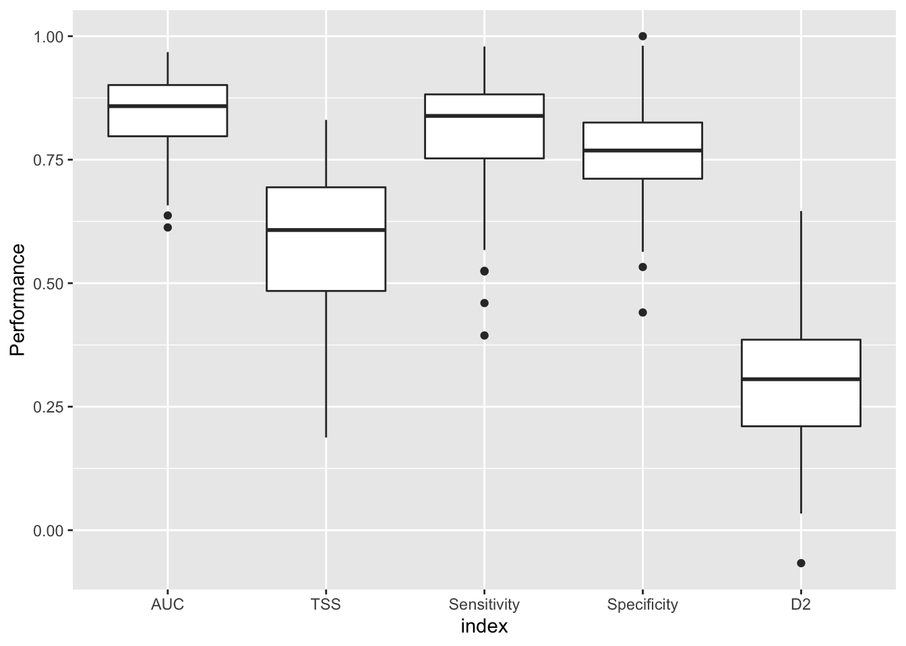
Now, we can make predictions in space and time, and look at species range shifts or changes in species richness patterns - either for all species or for specific species groups, e.g. warblers or gulls.
# All species remaining in our thinned data set:
spp_codes <- as.numeric(sub('sp.','',names(spp_thinned)[-c(1:3)]))
head(subset(bird_spp,speccode %in% spp_codes))## speccode english_name scientific_name taxonomic_rank
## 6 6 Little Grebe Tachybaptus ruficollis Species
## 7 7 Great Crested Grebe Podiceps cristatus Species
## 12 12 Fulmar Fulmarus glacialis Species
## 21 26 Cormorant Phalacrocorax carbo Species
## 22 27 Shag Phalacrocorax aristotelis Species
## 33 39 Grey Heron Ardea cinerea Species# Warblers have the species codes 389-424:
warblers <- names(spp_thinned)[-c(1:3)][spp_codes>=389 & spp_codes<=424]
# Gulls have the species codes 232-242:
gulls <- names(spp_thinned)[-c(1:3)][spp_codes>=232 & spp_codes<=242]# Prepare data frame with environmental data:
UK_dat <- merge(data.frame(rasterToPoints(bio_curr_std)),data.frame(rasterToPoints(lc_std)))
# We make predictions for all species:
env_preds <- data.frame(UK_dat[,1:2], sapply(spp_min40, FUN=function(sp){make.preds(spp_models[[sp]], UK_dat )}))
# Binarise predictions for all species:
env_preds_bin <- data.frame(UK_dat[,1:2], sapply(spp_min40, FUN=function(sp){ifelse(env_preds[,sp]>= unlist(spp_eval['thresh',sp]),1,0)}))
# Calculate species richness of warblers:
# Sum predicted probabilities
sum_prob_r <- rasterFromXYZ(data.frame(env_preds[,1:2],rowSums(env_preds[,warblers])), crs=proj_UK)
# Sum predicted presences
sum_bin_r <- rasterFromXYZ(data.frame(env_preds_bin[,1:2],rowSums(env_preds_bin[,warblers])), crs=proj_UK)
# Plot species richness for warblers:
spplot(stack(sum_prob_r,sum_bin_r),names.attr=c('Sum predicted probabilities','Sum predicted presences'), main='Warblers')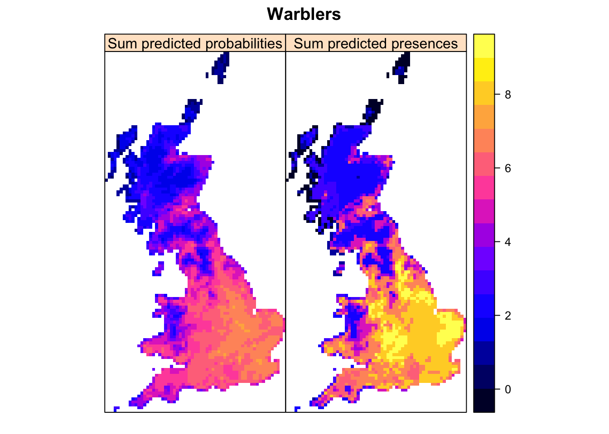
# Calculate species richness of gulls:
# Sum predicted probabilities
sum_prob_r <- rasterFromXYZ(data.frame(env_preds[,1:2],rowSums(env_preds[,gulls])), crs=proj_UK)
# Sum predicted presences
sum_bin_r <- rasterFromXYZ(data.frame(env_preds_bin[,1:2],rowSums(env_preds_bin[,gulls])), crs=proj_UK)
# Plot species richness for gulls:
spplot(stack(sum_prob_r,sum_bin_r),names.attr=c('Sum predicted probabilities','Sum predicted presences'), main='Gulls')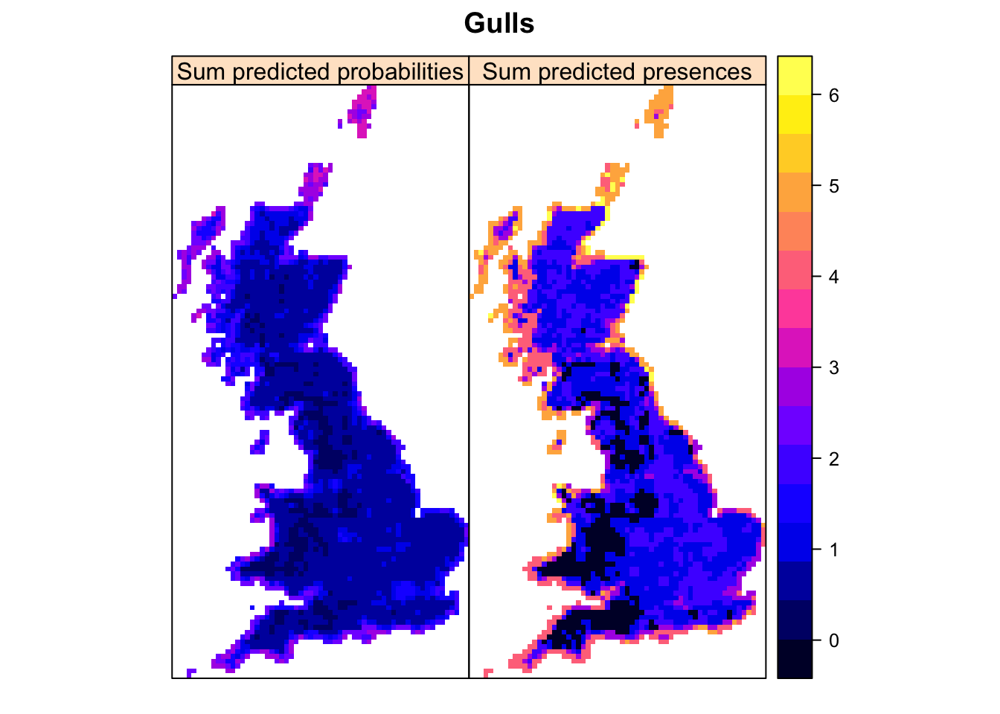
Here, I will only provide some teaser plots but without codes. It’s your task to work on these examples yourself.
Pick a species group and analyse changes in species richness between current and future (or past) environmental conditions. Compare predictions from models (i) including climate and land use predictors and (ii) including climate only. What assumptions are being made when predicting these models into the future (or past)? 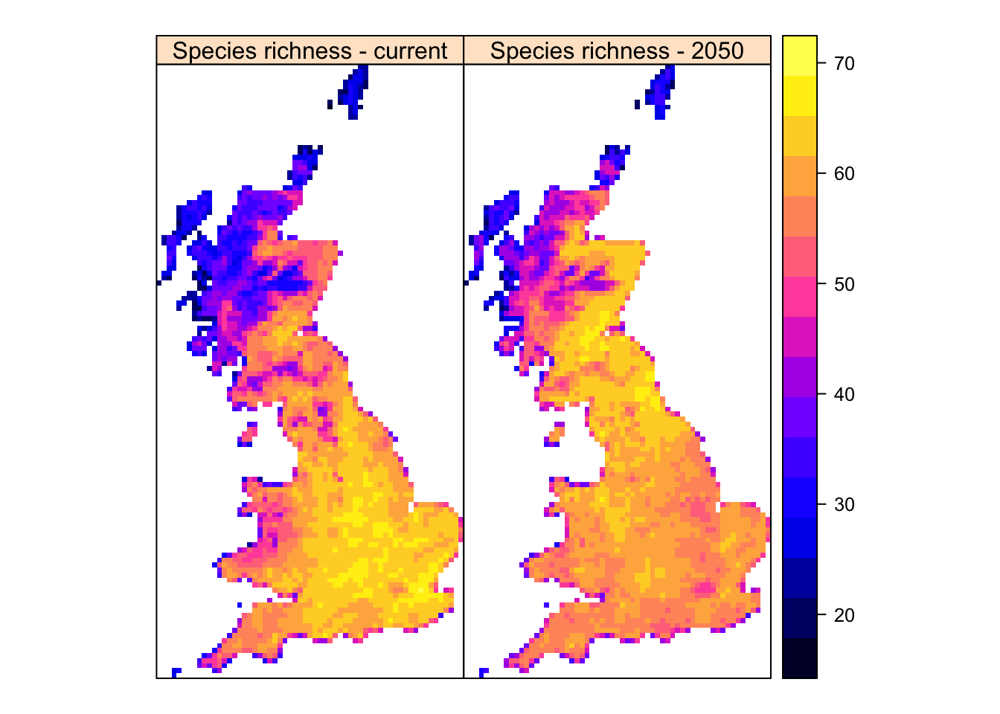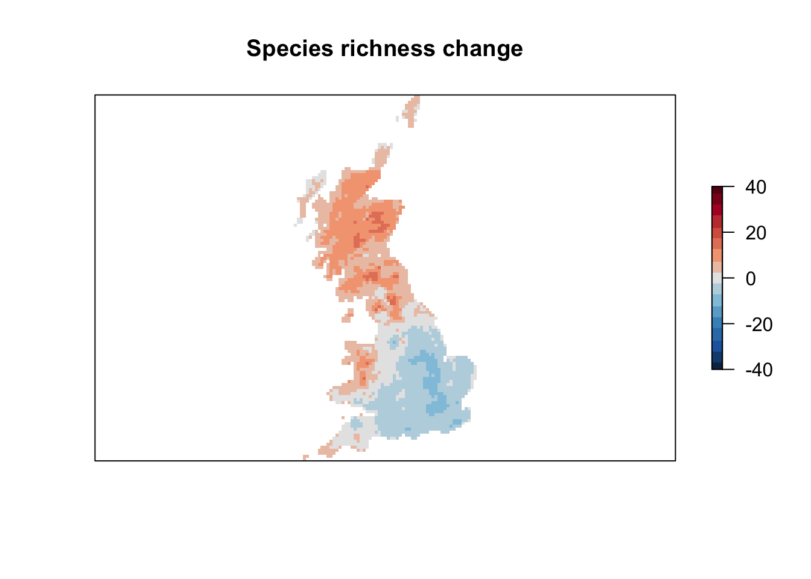
Pick a (few) species and analyse range changes between current and future (or past) environmental conditions. Specifically, identify areas where the species is loosing suitable habitat, where it could colonise newly suitable habitat and where habitat is predicted to remain stable. What is the size of area lost, area gained, and area remaining stable?
In addition, compare species range change for:
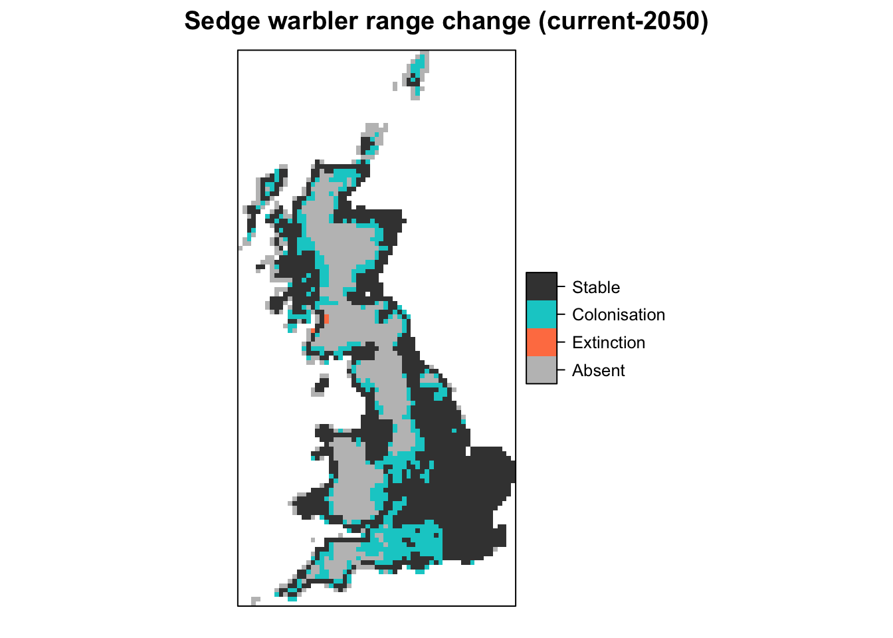
Imagine you want to prioritise areas for species conservation. A simple way forward is to prioritise a specific proportion of the highly suitable areas, e.g. 15%.
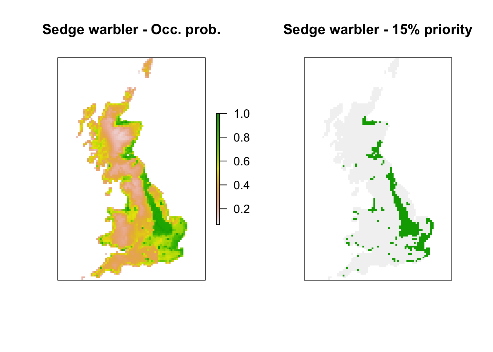
Now, you can compare prioritisation area across different algorithms, species and time slices.
First, an example comparing predictions from GLM and BRT (cf. Prac 5). 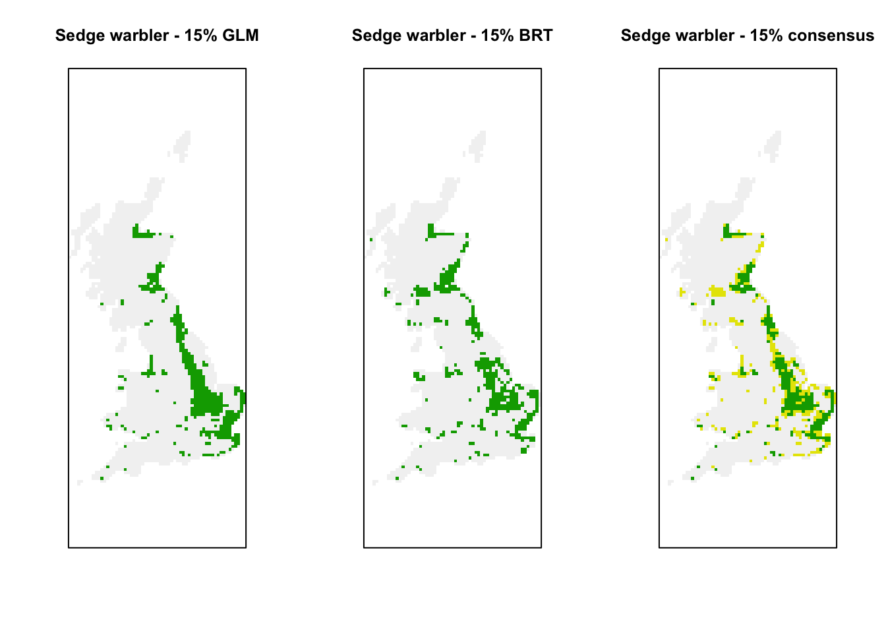
Next, an example comparing different species of warblers. 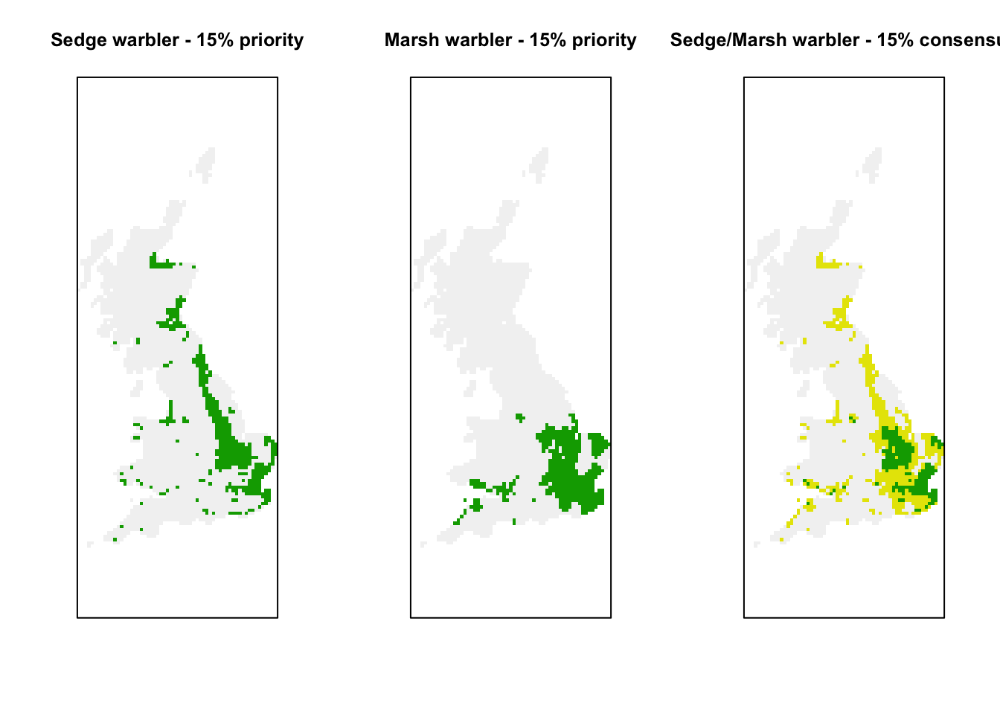
Last, an example comparing different time periods. 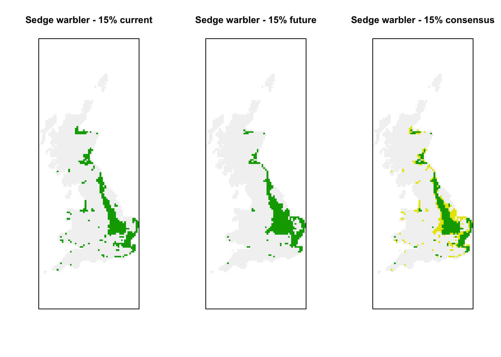
Gillings, Simon, Dawn E. Balmer, Brian J. Caffrey, Iain S. Downie, David W. Gibbons, Peter C. Lack, James B. Reid, J. Tim R. Sharrock, Robert L. Swann, and Robert J. Fuller. 2019. “Breeding and Wintering Bird Distributions in Britain and Ireland from Citizen Science Bird Atlases.” Global Ecology and Biogeography 28 (7): 866–74. https://doi.org/10.1111/geb.12906.